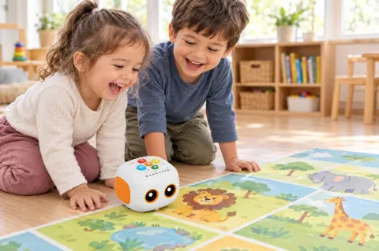
Be ekrano
Vaikai valdo robotą mygtukais ant jo nugaros. Planšečių ir telefonų nėra. PSO rekomenduoja, kad 3–4 metų vaikai prie ekrano sėdėtų ne ilgiau kaip valandą per dieną, o kuo mažiau, tuo geriau. Šaltinis: PSO, 2019
Naujausia Robotikos akademijos inovacija darželiams
Pirmasis Robotikos akademijos būrelis 3–4 metų vaikams su kalbančiu robotu. Vaikas pats valdo robotą ir kartoja žodžius lietuviškai ir angliškai.Vaikas pats valdo robotą ir skaičiuoja žingsnius.
Užtruks 1 minutę. Parašysime, kai atidarysime grupę jūsų darželyje ar centre.
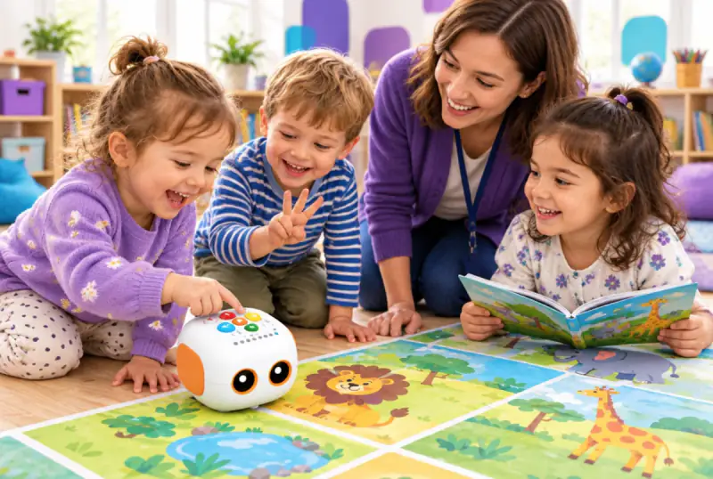
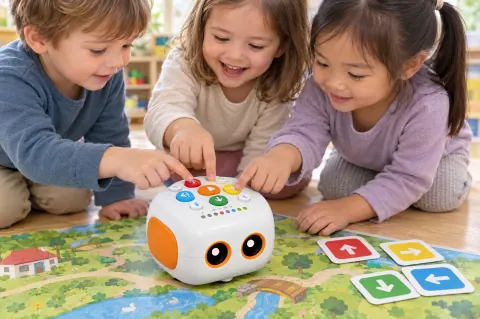
Spaudžia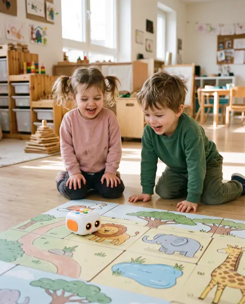
JuokiasiDI iliustracijos
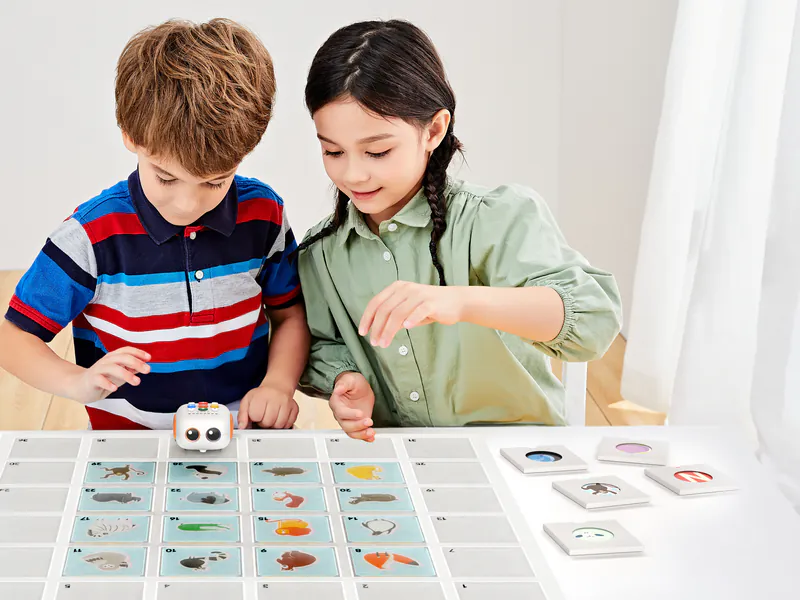
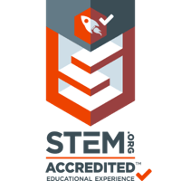
Skaičiai iš robotikosakademija.lt. Matata yra nauja programa.

Vaikai valdo robotą mygtukais ant jo nugaros. Planšečių ir telefonų nėra. PSO rekomenduoja, kad 3–4 metų vaikai prie ekrano sėdėtų ne ilgiau kaip valandą per dieną, o kuo mažiau, tuo geriau. Šaltinis: PSO, 2019
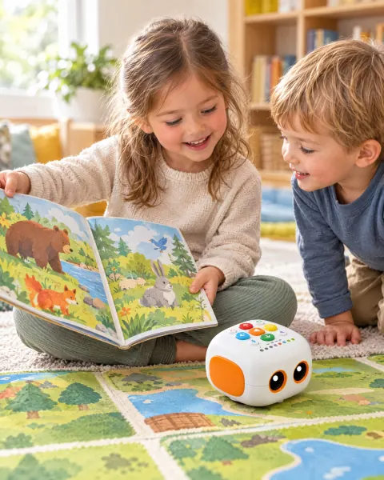
Kas savaitę nauja paveikslėlių knyga ir nauja tema. Vaikas kalba apie paveikslėlius ir kartoja žodžius lietuviškai ir angliškai. Kas savaitę nauja knyga. Robotas prabyla lietuviškai mūsų balsu: žodžius įrašome kartu su vaikais.
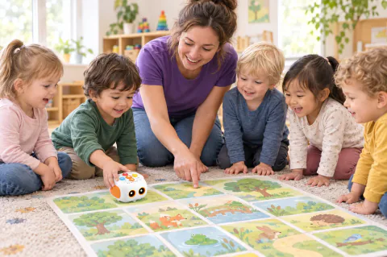
Iki 10 vaikų grupėje, 1 robotas dviem. Mygtukus spaudžia kiekvienas, niekas nelieka stebėti iš šono.
Spauskite rodykles, tada „Paleisti". Lygiai taip vaikai programuoja pamokoje, tik be ekrano: mygtukais ant tikro roboto, ant tikro žemėlapio.
Žingsnių: 0
Klaida yra bandymas: nuėjo ne ten, bandome dar.
Lietuvos ikimokyklinio ugdymo pasiekimų apraše parašyta paprastai: vaikas noriai mokosi ir džiaugiasi tuo, ką išmoko. Tai ir mūsų tikslas.
Ugdymo tikslai pagal amžiųVaikas mokosi sumanyti kelią, o kai nepavyksta, bandyti iš naujo arba kitaip.
3 m. Vaikas įveda 1–3 komandas mygtukais, paleidžia robotą ir žiūri, ar jis nuvažiavo ten, kur norėjo.
4 m. Vaikas pats pasako, kur keliaus robotas, išsidėlioja kelią komandų kortelėmis ir įveda jį robotui: 4–5 komandos, drąsesni iki 8. Kai robotas nuklysta, pasako, kas nepavyko, ir su mentoriumi ieško, kurią komandą pakeisti.
Ta pati mintis vaiką pasiekia skirtingais būdais, todėl kiekvienas randa, kaip įsitraukti.
3 m. Apie gyvūną vaikas išgirsta knygoje, pamato jį paveikslėlyje, iki jo nužingsniuoja kaip robotas ir pasiklauso savo įrašyto balso.
4 m. Tą patį žodį pasako lietuviškai ir angliškai, palydi judesiu ir įrašo trumpą sakinį robotui.
Ruošiamės skaityti: kalbamės apie knygą ir mokomės pasakoti.
3 m. Mentorius skaito paveikslėlių knygą ir klausia: „Kas čia? Kas bus toliau?" Vaikas rodo ir kartoja žodžius.
4 m. Vaikas pats spėja, kas bus toliau, ir papasakoja 2–3 įvykius iš eilės.
Skaičiai tampa keliu, kurį vaikas praeina pats.
3 m. „Būk robotas": vaikas žingsniuoja ant grindų ir garsiai skaičiuoja iki 5. Mokomės žodžių pirmyn ir atgal.
4 m. Vaikas dėlioja kelią rodyklėmis: pirmyn, atgal, kairėn, dešinėn. Skaičiuoja iki 5, drąsesni iki 10. Išsiaiškina, kiek žingsnių reikės, jei gyvūnas stovi vienu langeliu toliau.
Kiekviena pamoka baigiasi tuo, kad vaikas parodo draugams savo darbą.
3 m. Vaikas paleidžia robotą ir parodo draugams, kur jis nukeliavo. Užtenka parodyti, kalbėti nebūtina.
4 m. Vaikas papasakoja, kaip robotas atkeliavo, ir bando atsakyti, kodėl pasirinko tą kelią. Įrašo trumpą pasakojimą robotui.
Norime, kad vaikas pats prašytų eiti dar kartą.
3 m. Kas savaitę nauja knyga ir tema. Vaikas pats renkasi, kurį gyvūną aplankys robotas. Giriame už bandymą, pažymių nėra.
4 m. Vaikas sugalvoja savo pasakos pabaigą, ir robotas ją „suvaidina". Mentorius pagiria konkrečiai, pavyzdžiui, kad nepasidavė ir bandė dar kartą.
Keli keliai į tą pačią mintį. Per 30 minučių vaikas klauso, žiūri, juda, spaudžia mygtukus ir kalba. Lietuvos ikimokyklinio ugdymo gairės ugdymą grindžia universaliu dizainu mokymuisi, kad kiekvienas vaikas galėtų įsitraukti, suprasti ir parodyti, ką išmoko.
Pagal amžių. Trimečiai žengia pirmuosius žingsnius, keturmečiai jau drąsiau planuoja ir pasakoja. Tai ugdymo tikslai pagal amžių. Kaip rašoma Lietuvos pasiekimų apraše, kiekvienas vaikas auga savo tempu.
Remiamės: Ikimokyklinio amžiaus vaikų ugdymosi pasiekimų aprašas (ŠMSM, 2024) · Ikimokyklinio ugdymo programos gairės (ŠMSM, 2023) · Mol ir kt., 2008 · Ramani ir Siegler, 2008 · Skene ir kt., 2022 · Dargue ir kt., 2019. Tyrimų apie pačią programą dar nėra. Kiekvienas vaikas auga savo tempu. Šaltiniai.
Tema „Apsilankymas zoologijos sode": paveikslėlių knyga apie gyvūnus, 5 robotai, 5 žemėlapiai, iki 10 vaikų. Mentorius visą laiką prie stalo.
Robotas pasisveikina įrašytu balsu: „Labas! Hello!" Vaikas pasako robotui savo vardą.
4 m.: ir „Hello, I am…"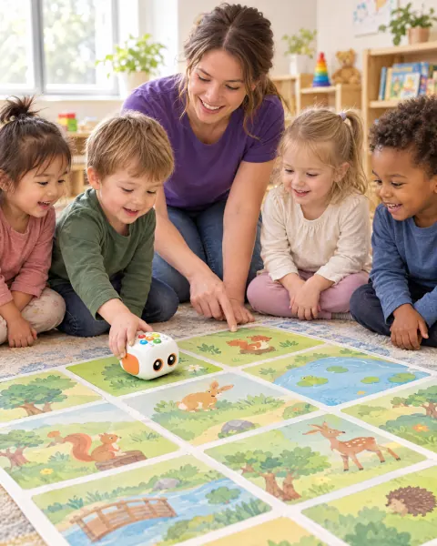
Mentorius skaito 3–4 puslapius ir klausia: „Kas čia? Kokį garsą daro liūtas?" Vaikai rodo ir kartoja gyvūnų vardus lietuviškai ir angliškai.
4 m.: vaikai patys spėja, kas bus toliauVaikai žingsniuoja pagal rodyklių korteles ant grindų ir skaičiuoja žingsnius garsiai. Be roboto, visu kūnu.
4 m.: 4–5 žingsnių seka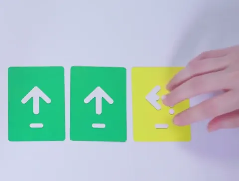
Robotą dedame ant „įėjimo". Balsas duoda užduotį, pora spaudžia mygtukus, skaičiuoja „1, 2, 3" ir su mentoriumi taiso, jei robotas nuėjo ne ten.
4 m.: kelias per 2 gyvūnus, gal su „Kartoti"Kiekviena pora įrašo į robotą vieną sakinį: „Liūtas labai didelis" arba „The lion says roar". Vaikas kalba į mikrofoną ir girdi save.
4 m.: dviejų sakinių istorija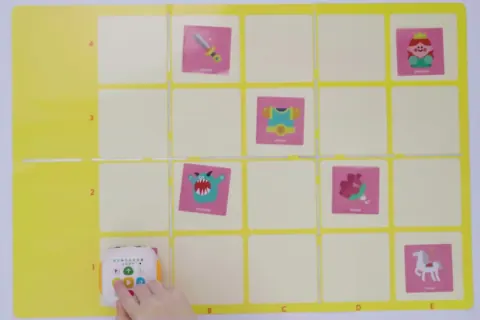
Dvi ar trys poros paleidžia savo robotą, kiti ploja. Vaikas papasakoja, kur robotas nuėjo.
4 m.: atsako „kodėl pasirinkai tą kelią?"Prisimename, ką šiandien aplankė robotas, ir atsisveikiname su juo lietuviškai ir angliškai.
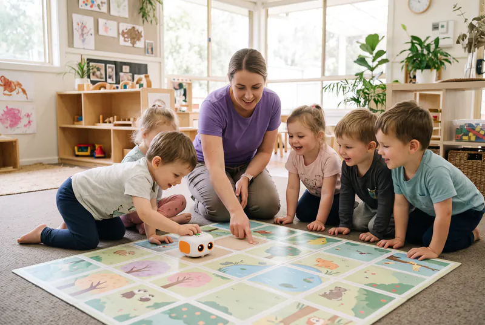
Vardą ir nuotrauką įdėsime, kai susirinks pirmoji grupė. Mentoriai kasmet mokosi: klasės valdymo, dirbtinio intelekto, pirmosios pagalbos.
Kartą per savaitę: 3 mėnesiai yra apie 12 pamokų, 6 mėnesiai apie 24.
Pavadina apie 20 naujų temų žodžių, atpažįsta keletą angliškų (drąsesni apie 10), skaičiuoja iki 5, įrašo savo sakinį robotui.
Padedamas papasakoja trumpą pasaką (keturmečiai 2–3 įvykius iš eilės), skaičiuoja iki 5 (drąsesni iki 10), parodo robotą draugams ir jums.
Tai programos tikslai. Kiekvienas vaikas auga savo tempu, todėl jų negarantuojame. Vaikas neišmoks skaityti ar kalbėti angliškai per pusmetį: tai pasiruošimas skaityti ir pirmieji žodžiai.
Pasaulio ekonomikos forumo 2025 m. ataskaitoje daugiau nei 1 000 darbdavių įvardijo, kokie įgūdžiai bus svarbiausi iki 2030 metų. Trimečiui tai labai paprasti dalykai.
| Ateities įgūdis (WEF 2025) | Ką vaikas daro pas mus | Pirmi žingsniai pagal amžių |
|---|---|---|
| Smalsumas ir mokymasis visą gyvenimą50 % darbdavių laiko esminiu, svarba iki 2030 m. auga (+61) | Kas savaitę nauja knyga ir tema. Vaikas renkasi, kur keliaus robotas. | 3 m. parodo, ką nori veikti4 m. pasako, ką darys toliau |
| Kūrybinis mąstymas57 %, auga (+66) | Sugalvoja savo garsą, žodį ar pasakos pabaigą. | 3 m. naujas garsas ar judesys4 m. sava pasakos pabaiga |
| Atsparumas, lankstumas ir judrumas67 %, auga (+66) | Kai robotas nuvažiuoja ne ten, ieškome klaidos ir bandome dar kartą. | 3 m. bando dar kartą su pagalba4 m. pasako, kas nepavyko, ir bando kitaip |
| Technologinis raštingumas51 %, auga (+68) | Programuoja robotą mygtukais, be ekrano. | 3 m. 1–3 komandos4 m. 4–5 komandų kelias iš kortelių, drąsesni iki 8 |
| Analitinis mąstymas69 %, 1 vieta, auga (+55) | Skaičiuoja žingsnius ir dėlioja kelią rodyklėmis. | 3 m. skaičiuoja iki 54 m. planuoja kelią su posūkiais |
| Empatija ir aktyvus klausymasis50 %, iki 2030 m. stabilus (+46) | Klausosi knygos ir draugo, dirba poroje prie vieno roboto. | 3 m. laukia eilės su pagalba4 m. padeda draugui |
Pirmi žingsniai pagal amžių: trimetis bando dar kartą su mentoriaus pagalba, o keturmetis jau pasako, kas nepavyko, ir planuoja ilgesnį kelią.
Lietuvoje šiuos žingsnius aprašo Ikimokyklinio ugdymo programos gairės, o mokykloje juos tęsia 7 bendrųjų programų kompetencijos: pasiekimų aprašas · bendrųjų programų kompetencijos.
Lyderystės ir DI čia neminime: trimečiui per anksti, o Matata sąmoningai be ekrano. Skaitymo ir skaičiavimo lentelėje nėra, nes WEF apklausoje jų svarba iki 2030 metų beveik nesikeičia. Mums jie yra pamatas, todėl juos rasite kortelėse aukščiau.
Trijose WEF ataskaitose (2020, 2023 ir 2025) kartojasi panašūs įgūdžiai: analitinis ir kūrybinis mąstymas, atsparumas, technologijos ir mokymasis. 2020 m. jis vadintas aktyviu mokymusi ir mokymosi strategijomis, o 2023 ir 2025 m. smalsumu ir mokymusi visą gyvenimą.
Šaltiniai: Pasaulio ekonomikos forumas, „Future of Jobs Report 2025", 3.3, 3.4 ir 3.6 pav. (p. 35, 37, 41) · Ikimokyklinio amžiaus vaikų ugdymosi pasiekimų aprašas (ŠMSM, 2024). „+N" yra darbdavių, manančių, kad įgūdžio svarba augs, dalis minus manančių, kad mažės, procentiniais punktais. WEF ataskaita yra darbdavių apklausa apie suaugusiųjų darbą. Su vaiko amžiumi įgūdžius siejame mes patys. Šios organizacijos mūsų programos nevertino.

Užsiėmimus veda Robotikos akademijos mentoriai. Taisyklės, kurių laikomės kiekvienoje pamokoje:
Kas kuria programą. Robotą ir pagrindines veiklų korteles sukūrė MatataStudio. Užsiėmimus veda Robotikos akademijos mentoriai, o pati akademija vaikus moko nuo 2013 metų. Matata yra nauja programa, todėl pirmųjų grupių tėvų atsiliepimus paskelbsime čia po pirmojo mėnesio.
Matata yra nauja programa. Tikrus atsiliepimus iš pirmųjų grupių įdėsime, kai juos turėsime, tik su raštišku sutikimu.
„[Ką vaikas pradėjo daryti namie po 4 pamokų]"
„[Ką pats sukūrė ar išmoko, savo žodžiais]"
„[Ką mato per 3 mėnesius]"
Tokiais robotais vaikai mokosi darželiuose daugiau nei 60 šalių (gamintojo duomenimis). Singapūre vaikai su jais mokosi net kinų kalbos. Estijoje tokie robotai darželiuose naudojami nuo 2017 metų. Lietuvoje užsiėmimus vedame lietuviškai, su paveikslėlių knygomis ir Robotikos akademijos mentoriais.
Video įkeliamas iš YouTube tik paspaudus mygtuką. Iki tol jokių YouTube slapukų.
Viena suma per mėnesį pagal vietą. 4 pamokos po 30 min, iki 10 vaikų, 1 robotas dviem.
4 pamokos po 30 min, apie 6,25 € už pamoką.
Ateiname į vaiko grupę. Vežti nereikia. Pamokos darželyje, laiką deriname su darželiu.vežti nereikia, ateiname į vaiko grupę. Grupė atsiranda, kai užsirašo keli tėvai iš to paties darželio ir darželis sutinka.
Užsirašyti į laukiančiųjų sąrašąĮ sąrašą4 pamokos po 30 min, apie 7,25 € už pamoką.
Tech Zity, Panerių g. 43, Vilnius. Popiet, Robotikos akademijos centre.Panerių g. 43, Vilnius, popiet.
Užsirašyti į laukiančiųjų sąrašąĮ sąrašąDarželyje: vežti nereikia, ateiname į vaiko grupę. Grupė atsiranda, kai užsirašo keli tėvai iš to paties darželio ir darželis sutinka. Centre: Panerių g. 43, Vilnius, popiet.
Grupės startuoja, kai susirenka pakankamai vaikų. Laukiančiųjų sąraše esantiems pranešime pirmiesiems. Pradžios datą pranešime el. paštu.
Dirbate darželyje arba norite pamokų savo vaiko darželyje?Pakvieskite į savo darželįAtsisiųsti vadovui (PDF, 1 psl.)
Pirmieji sužinosite, kada grupė atsidaro jūsų darželyje arba Tech Zity centre. Įsipareigojimo nėra: parašysime, kai susirinks grupė.
Palikite kontaktą, ir susisieksime dėl grupės jūsų darželyje. Atsisiųsti vadovui (PDF, 1 psl.)
„Kviečiu į darželį": darbuotojams ir tėvų atstovams
Mūsų prasme taip: spaudžia spalvotas rodykles, ir robotas eina. Skaityti nereikia. Gamintojas robotą skiria 3–5 metų vaikams.
Tiks. Dirbame poromis, vaikas gali spausti mygtukus ir klausytis. Kalbėti nereikia, kol pats nenori.
Darželyje 25 € per mėnesį, Tech Zity centre 29 €: 4 pamokos po 30 min. Įskaičiuoti robotai, žemėlapiai, komandų kortelės ir paveikslėlių knygos. Įsirašymas į sąrašą neįpareigoja, prieš mokėdami gausite visą informaciją.
Parašysime, kai atsidarys grupė jūsų darželyje ar centre. Įsipareigojimo nėra: tada ir nuspręsite. Grupės startuoja, kai susirenka pakankamai vaikų. Laukiančiųjų sąraše esantiems pranešime pirmiesiems.
Tiks. Pamokoje kiekvienas vaikas tą pačią mintį išgirsta, pamato ir išbando rankomis bei kūnu, todėl vieno būdo rinktis nereikia. Tyrimai rodo, kad žodį su paveikslėliu įsimename geriau nei vien išgirstą, o gestai padeda suprasti.
Per kelis mėnesius ne. Ugdome meilę knygai ir mokomės pasakoti: tai pasiruošimas skaityti. Žaisdamas vaikas išgirs ir pakartos pirmuosius angliškus žodžius: tai pirmas žingsnis į kalbą, ne kalbos kursas.
Robotą ir pagrindines veiklų korteles sukūrė MatataStudio. Užsiėmimus veda Robotikos akademijos mentoriai, o pati akademija vaikus moko nuo 2013 metų. Mentoriaus vardą ir nuotrauką įdėsime, kai susirinks pirmoji grupė.
Vilniuje: darželiuose (laiką deriname su darželiu) ir Tech Zity centre (Panerių g. 43). Patogiausią dieną pažymite formoje, o kai susirinks grupė, parašysime tikslų laiką. Pradžios datą pranešime el. paštu.
Mūsų tikslai atliepia Lietuvos ikimokyklinio amžiaus vaikų ugdymosi pasiekimų aprašą: mokėjimą mokytis, skaitmeninį sumanumą, matematinį mąstymą ir kalbą. Darželio programos nekartojame: tai atskiras būrelis.
Be jūsų raštiško sutikimo jokių vaiko veidų. Rodome rankas ir robotus. Centre pirmoje pamokoje galite pabūti pirmąsias minutes, kol vaikas apsipranta.
Įsirašykite į sąrašą, o kai grupė susirinks jūsų darželyje ar Tech Zity centre, parašysime pirmiesiems.